Lista de resumos aprovados nos GTs
A Comissão Organizadora do VI Colóquio Internacional “A Moral do Estado por Meio da Produção de Políticas Públicas” tem a alegria de anunciar a divulgação dos resumos expandidos aprovados para apresentação nos Grupos de Trabalho.
Parabenizamos todos os autores e autoras pelos trabalhos selecionados! A variedade de temas, instituições e abordagens revela a força da produção acadêmica comprometida com os desafios do nosso tempo. São reflexões que afirmam a pesquisa como instrumento de transformação social, análise crítica e fortalecimento de políticas públicas mais justas e eficazes.
Clique aqui para baixar o PDFSobre o Evento
A Linha de Pesquisa 2 do PPGDS (Programa de Pós-graduação em Desenvolvimento Social, da Universidade Estadual de Montes Claros – UNIMONTES) privilegia a análise das relações entre Estado, mercado e sociedade civil, procurando contribuir para o esclarecimento da ação e o apoio à decisão, na área multidisciplinar do desenvolvimento social.
Como forma de apoiar as atividades de formação, de pesquisa e de extensão, o PPGDS promoveu, desde a sua criação, em 2004, a sua internacionalização, através de parcerias para a realização de pesquisa, edição e eventos científicos, juntamente com o CICS.NOVA - Centro Interdisciplinar de Ciências Sociais, Faculdade de Ciências Sociais e Humanas, Universidade NOVA de Lisboa e a Université de Fribourg (Suisse) – Chaire Francophone de Travail Social et de Polítiques Sociales, no âmbito da REDE Internacional e Interdisciplinar sobre Desigualdades; e do Comité de Recherches CR30 Desigualdades, Identidades e Laços Sociais, da AISLF – Associação Internacional dos Sociólogos de Língua Francesa.
A Temática do VI Colóquio
Neste VI Colóquio Internacional queremos continuar o questionamento sobre o desenvolvimento, colocando agora o Estado, através da produção de políticas públicas, no centro das nossas interrogações. E, para tanto, além de pesquisadores vinculados à Rede Internacional e Interdisciplinar sobre as Desigualdades, nesta edição de 2025 contaremos também com a participação orgânica de professores e pós-graduandos do Instituto Federal de Educação, Ciência e Tecnologia do Norte de Minas Gerais – IFNMG.
A questão que nos motiva é a seguinte: quais são os valores que movem o Estado e a produção de políticas públicas que ele promove? Quer dizer, interessa-nos interrogar a moral do Estado.
Acreditamos que a verdadeira moral do Estado, assim que os dilemas que coloca a sua concretização, são melhor percebidos através das atividades profissionais – de organização intermédia ou de execução - mais próximas dos terrenos de concretização das políticas.